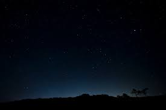

La Belleza de una Noche
Cuento completo - John Milton A.
Creo que lo he perdido, pues no oigo sus gigantescos pies estremeciendo el suelo detrás de mí. No quiero seguir corriendo, pero mis piernas me dicen: “no podemos parar”, y mi cerebro va en contra mía. Ya empiezo a sentir que me arde el pecho y todos mis pensamientos son completamente silenciosos y muy rápidos; es casi como si viese pasar la vida que tuve por delante de mis ojos y sintiese en mis manos la vida por la que corro. No recuerdo ya por qué corro y supongo que… ¡Auch! Sí que me ha dolido, pero agradezco a la oportuna piedra que se ha atravesado entre mis pies para hacerme recostar en el suelo a la fuerza. Sigo pensando en alto y sin chance para darle importancia a lo que haré después. Siento que estoy recostado en un suelo, a pesar de que no sienta nada en realidad, de césped fresco y húmedo por el tranquilo rocío nocturno de, creo, las doce de la medianoche. Se siente cómodo, y las pequeñas rocas que se hallan debajo de mi espalda me masajean de forma violenta pero cariñosa por cada respiración y me hacen recordar la sensación de un auténtico beso de despedida que expresa el dolor de un adiós sin palabras y un te quiero sin miradas, una expresión humilde y sincera. Ya percibo el sinfónico canto de los solitarios grillos que, a pesar de estar compuesto por una cacofonía irritante para un citadino, son la mejor compañía en una noche cuando el silencio predomina sobre la juventud de la luna. Así, me abriga el mudo llanto de la gélida y titilante luz de las distantes y fieles estrellas que acompañan a su padre el universo y que son el reflejo de cada una de las lágrimas de su hija la oscuridad. La luna me habla al oído con su pálida y moribunda luz nocturna usando palabras tan simples e insípidas cuyo significado no me hace falta para entender el dolor que transmite en cada milímetro que recorre sobre el denso, infinito y viviente bosque. Me está gustando deleitarme un rato en la orquesta nocturna de las enamoradas ranas y los filosofantes búhos acompañados de los sagaces zorrillos que se divierten corriendo entre los árboles, creciendo bajo el abrigo del pelaje de su madre. Así mismo, la danza serena y despreocupada de los árboles con el puro y sentimental soplar de la invisible y extemporánea brisa presagia la caída de unas tristes lágrimas derramadas por el teñido cielo de un mes como…, ya ni recuerdo el día, pero tampoco es necesario; me basta con sentir los pedazos de cielo soltados sobre la flora y para el deleite de la fauna del bosque y desatados por accidente encima de mi cuerpo sin aliento. El sonido abrumador provocado por el delicado golpeteo de las sencillas gotas sobre las rocas y las ramas de los árboles me produce una sensación placentera y me despierta los ánimos una vez más, ánimos que quisiera que se extinguieran.
Ya creo que tengo las suficientes fuerzas para levantarme y preocuparme por volver a mi casa, cualquiera que sea, después de todo ya no me acuerdo ni siquiera de mi nombre, y por ahora no me interesa. Para ser sincero, prefiero seguir acostado.
¿Qué tal si trato de observar más allá de las estrellas?, quiero fijarme en la oscuridad que ellas recubren y ver si encuentro algo, cualquier cosa, más allá; eso haría, quizá, más satisfactoria esta noche.
Creo que escuché algo, pero no puedo mover mi cabeza para tratar de descubrir de qué se trata…, de hecho, no me puedo mover, y empiezo a sentir una punzada en la espalda, algo que está dentro de mí, y admito que es lo único que realmente siento en este momento… Bueno, supongo que ya es tarde para preocuparme por la estaca que ha atravesado mi pecho, aunque sigo sin sentir cosa mayor a la punzada de mi dorso, pero sólo quiero seguir creyendo que todo va a estar bien y observar el denso negro malva que colorea al infinito, oscuro y hermoso universo.
Así se siente, después de todo, el hecho de ver cómo las estrellas se hacen más brillantes y se acercan hacia la tierra para recoger mi casi inerte cuerpo. Prefiero observar el oscuro universo haciéndose parte de mí y presentándome a la misma oscuridad para desposarla después.
FIN